The Tower: first version
A third mode beside duels and the Raid. Climb floors, one short room each; health carries over; three lives a climb; a boon after every floor; the same Tower for everyone each week. One player, offline, no account. Built on the Raid's engine, and the Raid itself is not changed. These pictures are from the game's own camera, with the game's HUD, taken by the computer: nobody has played it yet.
The menu
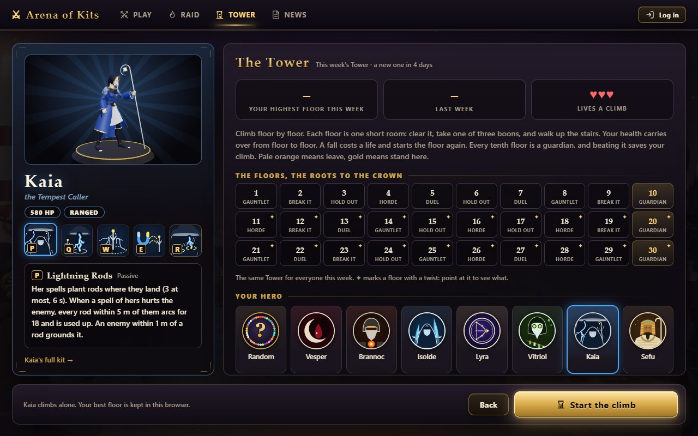
The six kinds of floor
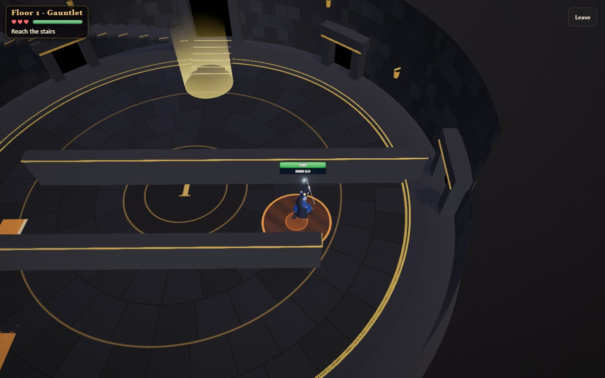
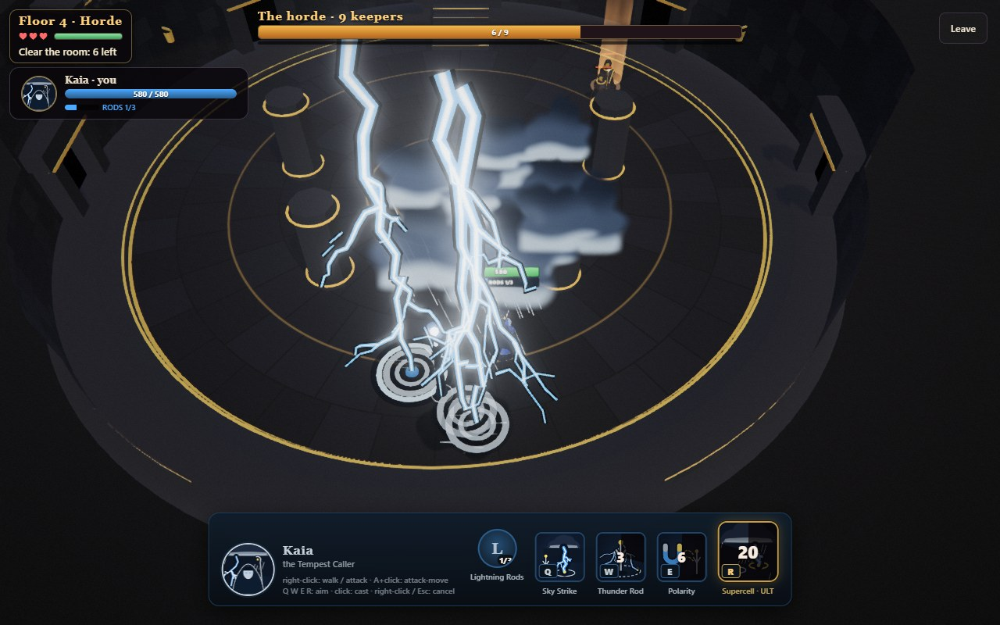
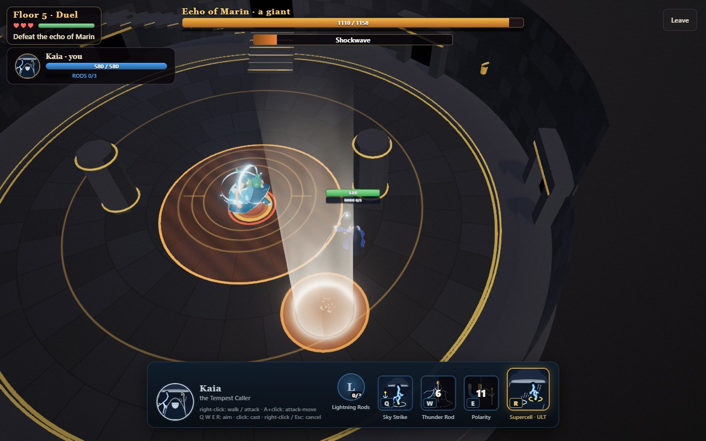
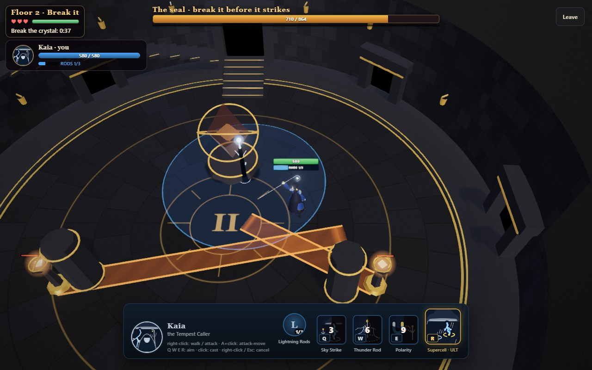
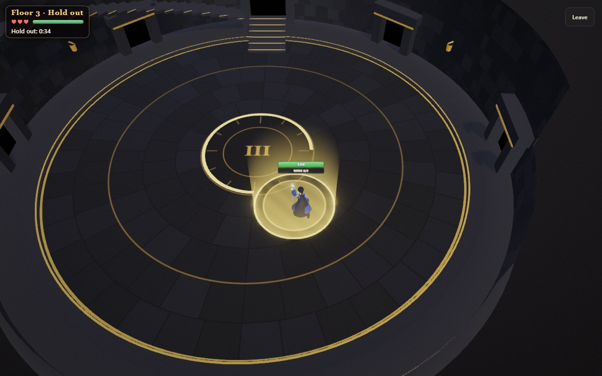
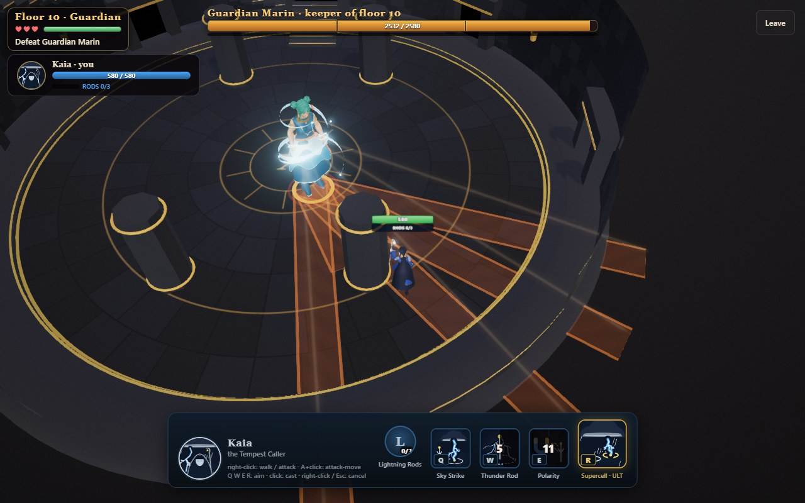
The boon pick
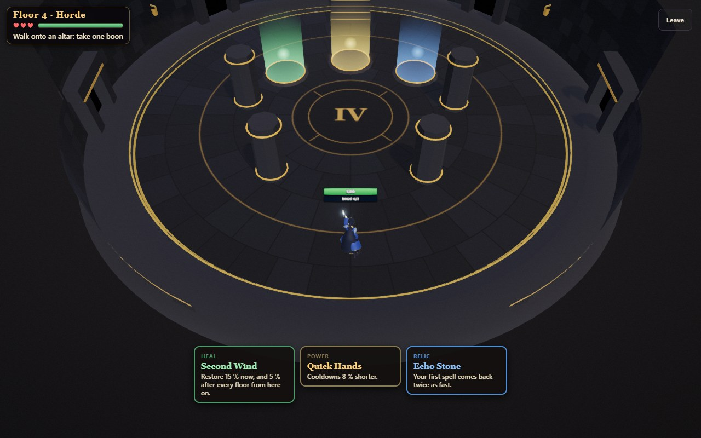
On a phone, held upright
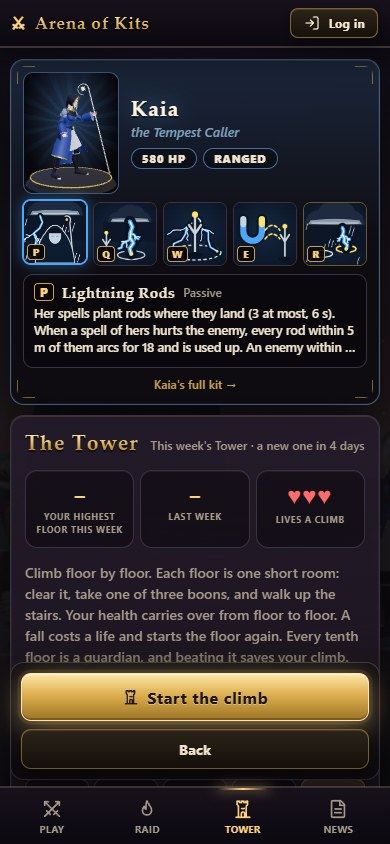
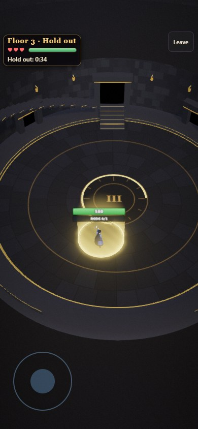
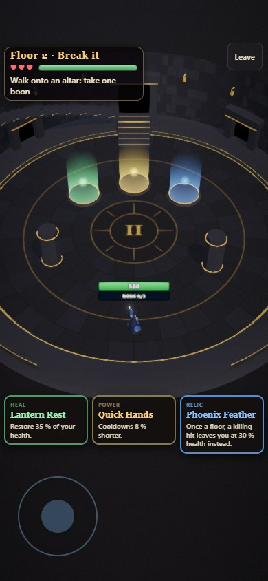
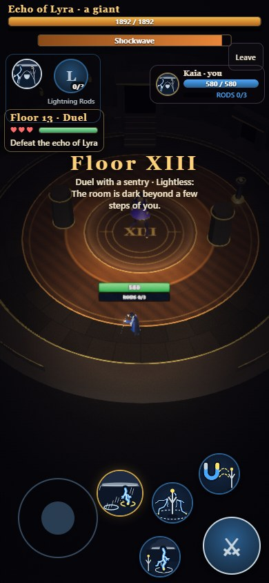
What the computer measured
The autopilot climbed this week's Tower (2026-W46) twice with each of ten heroes, and the next two weeks' Towers once with each. No errors, and no floor it could not finish. The number is the floor a climb ended on.
| Hero | This week, two climbs | Next week | The week after |
|---|---|---|---|
| Mortis | 22, 20 | 17 | 23 |
| Lyra | 22, 18 | 17 | 18 |
| Auriel | 22, 12 | 13 | 11 |
| Bram | 18, 18 | 20 | 12 |
| Sefu | 16, 16 | 16 | 12 |
| Kaia | 16, 13 | 12 | 12 |
| Nyx | 11, 12 | 12 | 7 |
| Vesper | 11, 11 | 12 | 7 |
| Isolde | 11, 11 | 10 | 5 |
| Brannoc | 10, 10 | 10 | 7 |
| The middle | 14.5 | 12.5 | 11.5 |
The aim was a middling hero ending on about floor 8 to 14.
| Kind (this week) | Cleared, of those tried | Seconds | Health lost on a cleared floor |
|---|---|---|---|
| Gauntlet | 53 of 53 | 31 | 25 % |
| Break it | 55 of 60 | 42 | 14 % |
| Hold out | 57 of 57 | 48 | 28 % |
| Horde | 44 of 76 | 41 | 27 % |
| Duel | 50 of 58 | 47 | 14 % |
| Guardian | 21 of 37 | 93 | 31 % |
The Horde is the kind the autopilot is worst at: it stands in the middle of it.
It cannot tell whether a floor is fun. That needs a hand.